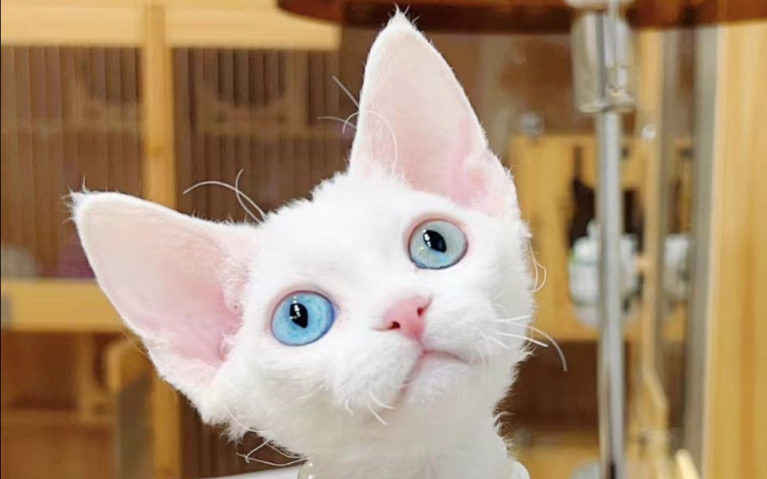

My English name is Apple. The reason for choosing this name is that when I was in kindergarten, my teacher asked me what my English name was. At that time, my English was not good, so I said the most familiar English word, Apple, and that name has been with me ever since.我的英文名字叫Apple。选择这个名字的原因是，当我在幼儿园的时候，我的老师问我的英文名字是什么。当时，我的英语不好，所以我说了最熟悉的英语单词，苹果，从那以后，这个名字就一直伴随着我。
I have many hobbies and interests, such as drawing, debating, and so on. The reason why I am interested in painting is because I believe it can fully express my thoughts and ideas through drawing. And the reason why I enjoy debating is that I feel like I am someone who loves to express my thoughts, so debating is a way for others to listen carefully to what I am saying.我有很多爱好和兴趣，比如画画、辩论等等。我之所以对绘画感兴趣，是因为我相信它可以通过绘画表达思想和想法。我喜欢的原因辩论是指我觉得自己是一个喜欢表达自己想法的人，所以辩论是让别人仔细听我说话的一种方式

Do you have any pets at home? I have a very cute German fur, it is white and the most special thing is its eyes. The pupils of the two eyes are of different colors, one is blue and the other is green. And the prototype of this cat is a white female cat with a pink bow inside a cat and mouse.The German Curly Cat, the Pok é mon of cats, has oversized ears, oval eyes, a short mouth, protruding cheekbones, and cat whisker pads, forming a small elf like appearance. And its curly fur is soft and curly, with the degree of curling most pronounced on the back and tail. Its unique appearance makes it look strange and cute, completely different from ordinary cats.你们家里面有宠物吗？我有一只非常可爱的德文毛，它是白色的而最特别的是它的眼睛，两只眼睛的瞳孔颜色是不一样的，一只是蓝色一只是绿色。而这只猫的原型是猫和老鼠里面带着粉色蝴蝶结的白色母猫。德文卷毛猫，猫中的精灵，有着特大的耳朵、椭圆形的大眼睛、短小的嘴、凸出的颧骨和猫须肉垫，构成一个小精灵般的样子。而它的卷毛柔软而卷曲，卷曲程度以背部及尾巴最为明显。独特的外观，让它看起来古怪又可爱，和普通猫咪相比，看起来完全不一样。

1.Is human nature inherently good or inherently evil人性本善还是人性本恶
2.Is the world a huge grass platform team世界是不是一个巨大的草台班子
3. If there was a bottle of medicine that could make the person you love love also love you, would you use this medicine如果有一瓶药可以让你爱的人也爱你，你会不会用这个药
4. Does the current society need a cold mind or a warm heart more当前社会更加需要冷头脑还是热心肠
5. Is true love a lie真爱是不是谎言
6. When the brain can achieve knowledge sharing among all humans by implanting a chip, should we implant this chip当大脑植入一个芯片就可以做到全人类知识共享，那要不要植入这个芯片
7.Is the ending or the process of the story more important故事的结局重要还是过程重要
8. Should people delay gratification or enjoy themselves in a timely manner人更应该延迟满足还是及时行乐
9.Should the concept of 'if there is a way in the world, it will be revealed; if there is no way, it will be hidden' be abandoned“天下有道则显无道则隐”的观念应不应该被摒弃
10. Did Tang Monk have a positive or negative impact on his journey to retrieve Buddhist scriptures“天下有道则显无道则隐”的观念应不应该被摒弃
Page2